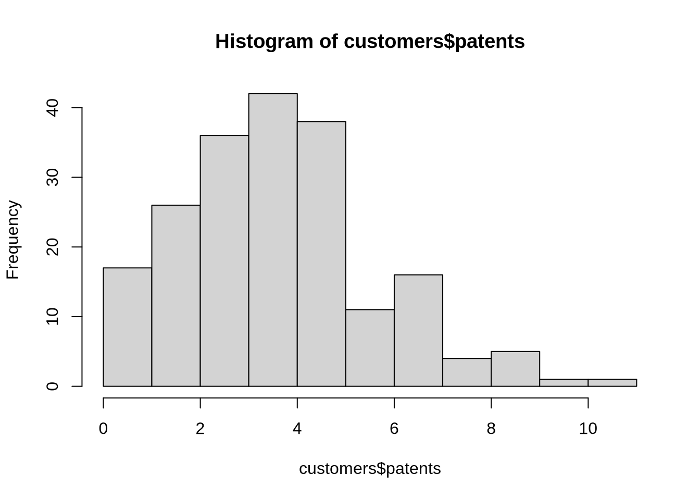
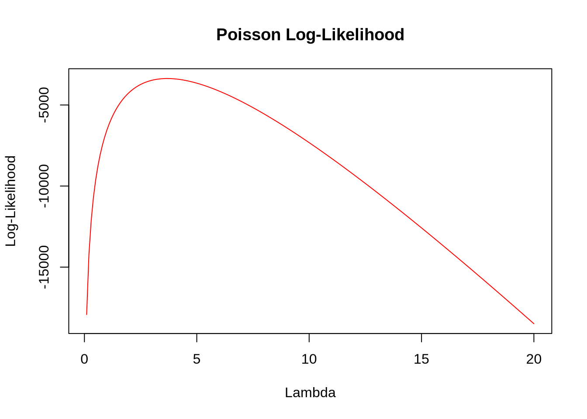

# read in the data
blueprinty <- read.csv("~/My_Quarto_Website/projects/project2/blueprinty.csv")Poisson Regression Examples
Blueprinty Case Study
Introduction
Blueprinty is a small firm that makes software for developing blueprints specifically for submitting patent applications to the US patent office. Their marketing team would like to make the claim that patent applicants using Blueprinty’s software are more successful in getting their patent applications approved. Ideal data to study such an effect might include the success rate of patent applications before using Blueprinty’s software and after using it. unfortunately, such data is not available.
However, Blueprinty has collected data on 1,500 mature (non-startup) engineering firms. The data include each firm’s number of patents awarded over the last 5 years, regional location, age since incorporation, and whether or not the firm uses Blueprinty’s software. The marketing team would like to use this data to make the claim that firms using Blueprinty’s software are more successful in getting their patent applications approved.
Data
To begin our analysis, we first need to read in the data.
We want to use this ddata to provide insights as to whether or not firms using Blueprinty’s software are more successful in getting their patent applications approved. We first visualize our data to see if there is an obvious difference in the number of patens approved between customers and non-customers. The plot blow shows a roughly similar distribution between both groups. One notable difference is that, for customers, we see more volume centered around 4 while the non-customers’ number of patents approved seems to be equally likely to be between 0 and 4. We cannot be certain looking at the plots alone, so we contimue by looking at the average number of patents approved but customer status.
customers <- blueprinty[blueprinty$iscustomer == 1, ]
noncustomers <- blueprinty[blueprinty$iscustomer == 0, ]
# Plot the first histogram
hist(noncustomers$patents,
col = "blue",
main = "Histogram Comparison",
xlab = "Number of Patents",
ylab = "Frequency",
ylim = c(0, max(hist(noncustomers$patents)$counts, hist(customers$patents)$counts))
)
# Add the second histogram to the same plot
hist(customers$patents,
col = "red",
add = TRUE
)
# Add a legend
legend("topright",
legend = c("Non-Customers", "Customers"),
fill = c("blue", "red"))The means for both groups are listed below. The mean for patents approved is roughly the same between customers and non-customers, but we can not be sure if there is a statistically significant difference between the two groups by simply comparing the means. To get more insights we can use linear regression to test the effect of being a customer.
#split data into customer and non-customer
customers <- blueprinty[blueprinty$iscustomer == 1, ]
noncustomers <- blueprinty[blueprinty$iscustomer == 0, ]
patent_mean_c <- mean(customers$patents)
patent_mean_nc <- mean(noncustomers$patents)
print(patent_mean_c)[1] 4.091371print(patent_mean_nc)[1] 3.623177Our linear model estimates that there is indeed a positive causal effect from being a customer on the number of patents that are approved. This finding is statistically significant at the 95 percent level.
patents_lm <- lm(patents~iscustomer, data=blueprinty)
summary(patents_lm)
Call:
lm(formula = patents ~ iscustomer, data = blueprinty)
Residuals:
Min 1Q Median 3Q Max
-4.0914 -1.6232 -0.6232 1.3768 12.3768
Coefficients:
Estimate Std. Error t value Pr(>|t|)
(Intercept) 3.62318 0.06505 55.702 < 2e-16 ***
iscustomer 0.46819 0.17949 2.609 0.00918 **
---
Signif. codes: 0 '***' 0.001 '**' 0.01 '*' 0.05 '.' 0.1 ' ' 1
Residual standard error: 2.348 on 1498 degrees of freedom
Multiple R-squared: 0.004522, Adjusted R-squared: 0.003857
F-statistic: 6.804 on 1 and 1498 DF, p-value: 0.009184Despite our findings, we must note that Blueprinty customers are not selected at random. It may be important to account for systematic differences in the age and regional location of customers vs non-customers. To check whether or not there is a systematic difference in the composition of the group, we will look at the group level compositions for both customers and non-customers. In the plots below, we compare the distributions for age and region.
Comparing Regions
Looking at the distribution of region for customers and nun-customers, we see a distribution that is mostly similar. Most of the members in the data are either located in the Northeast or the Southwest, with each of the three remaining region seemingly being equally proportioned among the remaining data. Given the similar distributions for the groups, we do not see evidence of a systematic difference between customers and non-customers when comparing regions.
# Get frequency counts for each group in column_name1
group_counts1 <- table(noncustomers$region)
# Plot a bar plot of the frequency counts for column_name1
barplot(group_counts1,
main = "Region Frequency Comparison",
xlab = "Regions",
ylab = "Frequency",
col = "blue",
border = "black"
)
# Get frequency counts for each group in column_name2
group_counts2 <- table(customers$region)
# Add the bar plot of the frequency counts for column_name2 to the existing plot
barplot(group_counts2,
col = "red",
add = TRUE
)
# Add a legend
legend("topright",
legend = c("Non-Customer", "Customer"),
fill = c("blue", "red")
)Comparing Ages
When comparing the ages between the customer and non-customer groups we see a difference between the distribution of ages. The age data for customers is skewed right, while the data for non-customers is shaped more like a bell curve. This difference translates to the customer group being younger on average than the non-customer group. With this difference in mind, we have reason to believe that there may be a systematic difference between the customer and non-customer group that we will likely want to account for prior to drawing any conclusions.
# Plot the first histogram
hist(noncustomers$age,
col = "blue",
main = "Histogram Comparison",
xlab = "Age",
ylab = "Frequency",
ylim = c(0, max(hist(noncustomers$age)$counts, hist(customers$age)$counts))
)# Add the second histogram to the same plot
hist(customers$age,
col = "red",
add = TRUE
)
# Add a legend
legend("topright",
legend = c("Non-Customers", "Customers"),
fill = c("blue", "red"))Estimation of Simple Poisson Model
Since our outcome variable of interest can only be small integer values per a set unit of time, we can use a Poisson density to model the number of patents awarded to each engineering firm over the last 5 years. We start by estimating a simple Poisson model via Maximum Likelihood.
The mathematical likelihood for a Poisson distribution is as follows: \(Y \sim \text{Poisson}(\lambda)\). Note that \(f(Y|\lambda) = e^{-\lambda}\lambda^Y/Y!\).
Next, we plot the Poisson likelihood (as well as the log-likelihood) as a function of using the number of patents observed as the input for Y.
poisson_log_likelihood <- function(lambda, Y){
log_likelihood <- -lambda + sum(Y * log(lambda)) - sum(log(factorial(Y)))
return(sum(log_likelihood))
}# Use the patents column from the blueprinty dataset
Y <- blueprinty$patents
# Create a sequence of lambda values
lambda_values <- seq(0.1, 20, by = 0.1) # Start from 0.1 to avoid lambda = 0
# Calculate log-likelihood for each lambda value using the vector of patents
log_likelihood_values <- sapply(lambda_values, function(lambda) poisson_log_likelihood(lambda, Y))
# Plot log-likelihood
plot(lambda_values, log_likelihood_values, type = "l", col = "red", xlab = "Lambda", ylab = "Log-Likelihood", main = "Poisson Log-Likelihood", ylim = range(log_likelihood_values, na.rm = TRUE))
We can use calculus to optimize our likelihood function by taking the first derivative of our log-likelihood function and setting it equal to zero to solve for lambda.
The log-likelihood function for the Poisson distribution is:
\(\log L(\lambda) = -\lambda + Y \log(\lambda) - \log(Y!)\)
Taking the derivative with respect to ( \(\lambda\) ):
\(\frac{d}{d\lambda} \log L(\lambda) = -1 + \frac{Y}{\lambda}\)
Setting the derivative equal to zero and solving for ( \(\lambda\) ):
\(-1 + \frac{Y}{\lambda} = 0\)
\(\frac{Y}{\lambda} = 1\)
\(\lambda = Y\)
So, the maximum likelihood estimate of ( \(\lambda\) ) for the Poisson distribution is ( \(\lambda\) = Y ), which is to be expected given that the mean of a Poisson distribution is lambda (\(\lambda\)).
We can also find the maximum likelihood estimate (MLE) of ( \(\lambda\)) for the Poisson distribution by optimizing the log-likelihood function using R’s optim() function. Here’s how we can do it:
# Define the log-likelihood function for the Poisson distribution
poisson_log_likelihood <- function(lambda, Y){
-sum(dpois(Y, lambda, log = TRUE))
}
# Use the patents column from the blueprinty dataset
Y <- blueprinty$patents
# Use optim() to find the MLE
mle_result <- optim(par = 1, fn = poisson_log_likelihood, Y = Y, lower = 0.01, upper = 20, method = "Brent")
# Extract the MLE
lambda_mle <- mle_result$par
lambda_mle[1] 3.684667Estimation of Poisson Regression Model
Next, we extend our simple Poisson model to a Poisson Regression Model such that \(Y_i = \text{Poisson}(\lambda_i)\) where \(\lambda_i = \exp(X_i'\beta)\). The interpretation is that the success rate of patent awards is not constant across all firms (\(\lambda\)) but rather is a function of firm characteristics \(X_i\). Specifically, we will use the covariates age, age squared, region, and whether the firm is a customer of Blueprinty.
# Convert region to factor
blueprinty$region <- as.factor(blueprinty$region)
# Create covariate matrix X
X <- cbind(1, blueprinty$age, blueprinty$age^2, model.matrix(~ -1 + region, data = blueprinty), blueprinty$iscustomer)
y <- blueprinty$patents
# Update likelihood function for Poisson regression
poisson_reg_ll <- function(beta, X, y){
lambda <- exp(X %*% beta)
log_likelihood <- -sum(dpois(y, lambda, log = TRUE))
return(log_likelihood)
}## Use optim() to find the MLE vector and the Hessian
#out <- optim(par = rep(0, ncol(X)), fn = poisson_reg_ll, X = X, y = y, hessian = FALSE, control = list(fnscale = -1), method = "Nelder-Mead")
## Calculate standard errors of beta parameter estimates
#Hinv <- -solve(out$hessian)
#results <- cbind(coefs = out$par, sterr = sqrt(diag(Hinv)))
#rownames(results) <- colnames(X)
#results <- round(results, 4)
## Display coefficients and standard errors
#resultsWe can test the validity of our results using a generalized linear model.
# Fit a Poisson regression model using glm
glm_model <- glm(patents ~ age + I(age^2) + region + iscustomer, data = blueprinty, family = "poisson")
# Display summary of the glm model
summary(glm_model)
Call:
glm(formula = patents ~ age + I(age^2) + region + iscustomer,
family = "poisson", data = blueprinty)
Coefficients:
Estimate Std. Error z value Pr(>|z|)
(Intercept) -0.4512823 0.1836301 -2.458 0.01399 *
age 0.1445364 0.0138793 10.414 < 2e-16 ***
I(age^2) -0.0028681 0.0002577 -11.131 < 2e-16 ***
regionNortheast 0.0985960 0.0420070 2.347 0.01892 *
regionNorthwest -0.0200942 0.0537833 -0.374 0.70869
regionSouth 0.0571720 0.0526757 1.085 0.27776
regionSouthwest 0.0513470 0.0472124 1.088 0.27678
iscustomer 0.1181144 0.0389204 3.035 0.00241 **
---
Signif. codes: 0 '***' 0.001 '**' 0.01 '*' 0.05 '.' 0.1 ' ' 1
(Dispersion parameter for poisson family taken to be 1)
Null deviance: 2362.5 on 1499 degrees of freedom
Residual deviance: 2178.8 on 1492 degrees of freedom
AIC: 6567.7
Number of Fisher Scoring iterations: 5Interpreting the results of our regression we can cnofirm that being a customer has a positive and statistically significant impact on the likelihood of a patent application being approved. This finding supports the initial claim that firms using Blueprinty’s software are more successful in getting their patent applications approved. Our regression results are also telling us that age and region have a statistically significant effect on patent outcomes. This finding is consistent with the differences we had observed in patent outcomes and age/region distributions between customers and non customers. Given our results, it would be wise for a firm to consider becoming a customer to realize the effects of Blueprinty’s software on patent success.
AirBnB Case Study
Introduction
AirBnB is a popular platform for booking short-term rentals. In March 2017, students Annika Awad, Evan Lebo, and Anna Linden scraped of 40,000 Airbnb listings from New York City. The data include the following variables:
Data
To begin our analysis, we first need to read in the data.
# read in the data
airbnb <- read.csv("~/My_Quarto_Website/projects/project2/airbnb.csv")
# Function to replace NA with mode
na_to_mode <- function(x) {
if (is.factor(x) | is.character(x)) {
mode_val <- as.character(which.max(table(x)))
x[is.na(x)] <- mode_val
} else {
mode_val <- as.numeric(names(which.max(table(x))))
x[is.na(x)] <- mode_val
}
return(x)
}
# Apply the function to each column
airbnb_clean <- as.data.frame(lapply(airbnb, na_to_mode))Visualizing the Response Variable
library(ggplot2)
ggplot(airbnb_clean, aes(x = airbnb_clean$number_of_reviews)) +
geom_histogram()Warning: Use of `airbnb_clean$number_of_reviews` is discouraged.
ℹ Use `number_of_reviews` instead.`stat_bin()` using `bins = 30`. Pick better value with `binwidth`.max(airbnb_clean$number_of_reviews)[1] 421Modeling the data
The Poisson regression model explores the factors influencing the number of reviews for Airbnb listings. The intercept (5.537) represents the expected number of reviews when all other variables are zero, which is not practically meaningful in this context. For each additional day of availability, the expected number of reviews increases by a factor of 1.00005021. Private rooms are associated with a 14.57% decrease, and shared rooms with a 41.71% decrease in the expected number of reviews compared to entire home/apartment listings. Each additional bathroom is linked to a 11.61% decrease, while each additional bedroom corresponds to a 7.02% increase in the expected number of reviews. Higher prices are associated with a slight decrease in reviews, with each unit increase leading to a 0.024% decrease. Higher review scores for cleanliness, location, and value are associated with increases in the expected number of reviews. Lastly, listings that are instant bookable have an expected 34.68% increase in reviews compared to non-instant bookable listings.
model <- glm(number_of_reviews ~ days + room_type + bathrooms + bedrooms + price + review_scores_cleanliness +review_scores_location + review_scores_value + instant_bookable, data = airbnb_clean , family = poisson)
summary(model)
Call:
glm(formula = number_of_reviews ~ days + room_type + bathrooms +
bedrooms + price + review_scores_cleanliness + review_scores_location +
review_scores_value + instant_bookable, family = poisson,
data = airbnb_clean)
Coefficients:
Estimate Std. Error z value Pr(>|z|)
(Intercept) 5.537e+00 1.289e-02 429.50 <2e-16 ***
days 5.021e-05 3.547e-07 141.56 <2e-16 ***
room_typePrivate room -1.457e-01 2.785e-03 -52.33 <2e-16 ***
room_typeShared room -4.171e-01 8.595e-03 -48.53 <2e-16 ***
bathrooms -1.161e-01 3.800e-03 -30.55 <2e-16 ***
bedrooms 7.018e-02 1.990e-03 35.26 <2e-16 ***
price -2.441e-04 1.082e-05 -22.55 <2e-16 ***
review_scores_cleanliness 3.794e-02 1.454e-03 26.09 <2e-16 ***
review_scores_location -1.803e-01 1.541e-03 -116.99 <2e-16 ***
review_scores_value -1.480e-01 1.777e-03 -83.31 <2e-16 ***
instant_bookablet 3.468e-01 2.875e-03 120.64 <2e-16 ***
---
Signif. codes: 0 '***' 0.001 '**' 0.01 '*' 0.05 '.' 0.1 ' ' 1
(Dispersion parameter for poisson family taken to be 1)
Null deviance: 1340709 on 40627 degrees of freedom
Residual deviance: 1262681 on 40617 degrees of freedom
AIC: 1386748
Number of Fisher Scoring iterations: 9